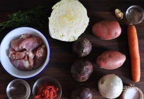

Нам понадобится:
| Продукт | Количество |
| Капуста | 1/2 штуки |
| Картофель | 4 штуки |
| Морковь | 1 штука |
| Свекла | 2 штуки |
| Чеснок | 2-3 зубчика |
| Томатная паста | 2 ст. ложки |
| Лук | 1 штука |
| Вода | 3-4 литра |
| Лавровый лист | 1 штука |
| Уксус | 1 ст. ложка |
| Соль, перец, растительное масло | По вкусу |
| Мясо | 450 грамм |
Каллорийность на 100 грамм
- 74 ккал
- 5г белка
- 3г жиры
- 7г углеводы
Пошаговый рецепт:
Шаг 1
Вот необходимый нам набор ингредиентов чтобы приготовить классический борщ на мясном бульоне.

Шаг 2
Для начала необходимо сварить мясной бульон. Мясо вымойте, выложите в кастрюлю и залейте водой. Добавьте лавровый лист. После закипания уберите огонь до минимума и варите до мягкости мяса (время зависит от того, какое именно мясо вы выбрали). Аккуратно достаньте его из бульона после готовности.

Шаг 3
Бульон при желании процедите. Подсолите по вкусу и выложите нарезанный кубиками картофель. Варите около 10-12 минут.

Шаг 4
Лук с морковью очистите, измельчите и обжарьте на сковороде с небольшим количеством растительного масла. В кастрюлю с бульоном выложите обжаренные овощи и мелко нашинкованную капусту.

Шаг 5
На сковороду тем временем налейте еще немного масла и выложите тертую свеклу. Обжарьте пару минут и добавьте уксус. Тушите еще минут 5, а после выложите томатную пасту. Томите на медленном огне еще 5-7 минут.
Шаг 6
В бульон выложите мясо, предварительно нарезав его порционными кусочками, и свеклу.

Шаг 7
По вкусу добавьте соль, перец, сахар и чеснок. Варите еще минут 7-10 до готовности картофеля. После снимите с огня, накройте крышкой и оставьте на полчасика настояться. Перед подачей можно добавить зелень и сметану.

Борщ готов! Приятного аппетита!
Также можно ознакомиться с рецептами вкусных десертов, перейдяя по ссылке.
Вернуться к началу